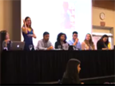
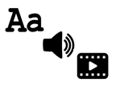
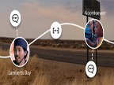

Open Issue
22.1 Fall 2017
Logging On
- In This Issue - Cheryl Ball, Editor
-
Disputatio
-
Caring for the Future: Initiatives for Further Inclusion in Computers and Writing
Janine Butler, Joseph Cirio, Victor Del Hierro, Laura Gonzales, Joy Robinson, & Angela Haas
Winners of the Gail E. Hawisher & Cynthia L. Selfe Caring for the Future Scholarship share their experiences and their suggestions for increasing diversity and inclusion in the Computers and Writing community.
-
The Terrain Less Traveled
Margaret A. Moore
Moore shares her experiences using a wheelchair to navigate space to argue that a wheelchair allows for an adventurous life. Her video was composed using her Assistive and Augmentative Communication (AAC) device and her camera and iMovie on her iPhone.
-
Transmodality in Action: A Manifesto
Kate Artz, Danah Hashem, Anne Mooney
A collaboratively created manifesto on the value and complexity of transmodal composition, this webtext includes three variant forms: an alphabetic statement (structurally modeled after the Riot Grrrl Manifesto), an audio discussion (composed as a podcast), and a video trailer (in the style of a movie trailer).
-
-
Topoi
-
Visualizing Digital Seriality or: All Your Mods Are Belong to Us!
Shane Denson
"Visualizing Digital Seriality" explores the modding community surrounding video games through a case study exploring how serialization relates to digital cultures. Through a series of data visualizations, the topic of seriality and methods of distant reading are offered to enhance critical code studies through digital humanities methods
-
Augmented Vélorutionaries: Digital Rhetoric, Memorials, and Public Discourse
Madison Jones & Jacob Greene
"Ghost bikes function as MEmorials, or a public acknowledgement of the unspoken costs of petrocultural values. However, ghost bikes are temporary monuments: they are often stolen or taken down by public authorities within just a few days or weeks after their installation. We created the mobile augmented reality experience “Death Drive(r)s: Ghost Bike (Monu)mentality” to visualize MEmorials of ghost bikes digitally."
-
Augmented Learning Spaces for Sustainable Futures: Encounters between Design and Rhetoric in Shaping Nomadic Pedagogy
Bruce Snaddon, Andrew Morrison, & Andrea Grant Broom
"Methodologically, this webtext takes up a diversity of modes of making, documenting and reflecting on this shared learning journey, including photography, interviews, participant observation, and a documentary film. This is conveyed through a spatial rhetoric that is designed to evince and allow access to different thematics and elements in the interface so that readers—students, educators, researchers—may differentially traverse the multimodal account of the learning journey."
-
-
Inventio
-
Remediating the CCCC Chair's Address for Video
Michael J. Faris, Sarah E. Austin, Erica M. Stone, & Joyce Locke Carter

This webtext shares the invention practices and processes of two students in Michael Faris's 2016 two-week New Media Rhetoric graduate course, Sarah E. Austin and Erica M. Stone, who were tasked with creating a video of Joyce Locke Carter's 2016 College on Composition and Communication (CCCC) Chair's Address.
-
-
Praxis
-
Affective Connections to Place: Digital Storytelling in the Classroom
Megan Adams
Adams uses students’ video compositions, interviews, and written reflections of their work in a rural community to examine the affordances of audio-visual composing in assisting students to connect to cultural and geographic communities outside of campus and to interrogate their own personal perceptions of and connections to place.
-
-
PraxisWiki
-
"That Looks Weird": Analyzing the Rhetoric and Technology of Websites Over Time with Critical Genre Awareness
Marcy Leasum Orwig
-
Critics and Cartographers in the Classroom: Using CARTO and WordPress to Build a Digital Public Writing Project
J. Bret Maney
-
Digital Badges in the First-Year Composition Classroom
Spencer Smith
-
KairosCast
-
KairosCast Episodes 8 & 9
Courtney Danforth & Harley Ferris
Interviews
-
A Scholarly Legacy: Cynthia Selfe and the Digital Archive of Literacy Narratives
Samuel Head
-
Captioning Hypnotoad—A Quest That Helped Define a Field: An Interview with Sean Zdenek
Gregory Zobel
-
Index: All Kairos Interviews
Reviews
-
A Review of Collaborative Approaches to the Digital in English Studies edited by Laura McGrath
Grand View New Media Collective
-
Video Game Review: Type:Rider
Elizabeth J. Fleitz
-
Index: All Kairos Reviews